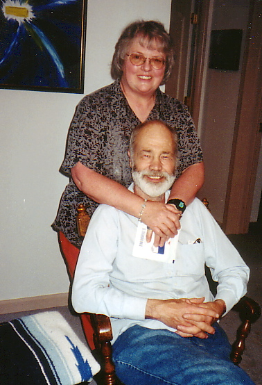

Karen Davis and David Talbott, May 2001 in Tennessee
Subject: David
We have been in a bit of turmoil here. David has been sick and has become extremely weak and anemic. We found out Wednesday that he has cancer of the esophagus. He had a cat scan today. We won't hear from that for a week or so. Then we will know how far it has spread.
We don't know the prognosis or the options yet. The doctor who did the endoscopy told us that it is cancer of the esophagus. He said David will need surgery, but not until he has had chemo and/or radiation therapy. We have been told of a Dr. in Seattle at UW who specializes in esophageal cancer. My hope is that David will want to go there.
We have a deep and abiding faith and accept whatever the Lord's will be in this case. Of course, we want healing and good health.
Karen
Subject: David update
The specimens taken two weeks ago when David had his endoscopy were called "suspected malignant". The Oncologist said she could not treat based on that and requested a repeat endoscopy for more, larger specimens. David had that procedure this morning.
He had no problems and ate a big breakfast before we came home. We should have pathology reports by Monday afternoon--maybe.
After that should be a return visit to the oncologist, Dr. Pant.
David has a very positive attitude and that will go a long ways in dealing with all of this which is beginning to be overwhelming.
If you do not want these updates, let me know and I will stop sending them to you.
Karen
Subject: David update
Hi!
We are still waiting for the biopsy report. I just called the Dr.'s office and was told it usually takes 10 days and that the doctor would call me. I told her he didn't last time and that he should not tell patients that the report would be back in 2 days. She said she would make sure he called us when the report comes in.
In the meantime, all of the iron David has been taking is turning into red blood cells and he is getting some energy back.
We have had a busy week with friends and family from far and near. Friday evening we went to the movies at our church and saw "My Great Big Fat Greek Wedding". It was hilarious and we both had a good time. Sunday we went to David's sister, Linda's place and there were family from Pocatello and Alaska, and all parts between. There were 25 or so folks there and we had a great time visiting and catching up with each other's lives. During the week David's cousin, Roger and wife Peggy visited with us, as did friend Diane Starr from Canada.
In the meantime, I joined the FlyLady (http://www.FlyLady.net) and have been working on decluttering--in the corners David does not frequent! It is going to be a great challange reclaiming some parts of the house.
I will keep you informed and as always, if you do not want to receive these updades, just let me know.
Karen
Subject: David Update
I took David to Lewiston to St. Joseph's Regional Medical Center this morning to begin his chemo and radiation therapy. Once a diagnosis of adenocarcinoma was confirmed by biopsy and pathology reports, things started to move rather quickly. Dr. Pant called as soon as she had the biopsy report and set up admission for him in Lewiston. Dr. Pant was there this morning to admit him. She went over what we could expect from the chemo. I asked if there were any restriction on visitors. She said there would be not problem while he is in the hospital. However, she said that in 1-2 weeks his immune system would be at it's lowest and that he must be careful of what he eats and drinks and should avoid contact with children and with people with colds. I asked about procrit before they started chemo. She said procrit was used in cases where the body was not producing blood cells, not for iron deficiency anemia. David's iron deficiency anemia comes from bleeding faster from the cancer than he can produce red blood cells.
They inserted a pic-line and started working on rehydrating him. Blood tests showed that he was even more anemic than he had been a month ago in Moscow, in spite of ingesting iron three times a day. Two units of blood were ordered. I commented that I had frequently thought he was a quart low...
Chemo had to be postponed until the blood was infused because the pic-line only has two access ports--one for the rehydration and one for the blood. They had finished one unit before I left at 5:30 PM. It was nice to see a little pink in his ears and lips.
The Radiologist, Dr. Anderson, met with us briefly to sort of outline what can be expected from the radiation therapy. It appears that David will begin to swallow better from the chemo, and then in 1-2 weeks AFTER the radiation is done he will get the world's worst sore throat. He told us that nutrition was all important and that David must continue to eat (drink) even though his throat is sore. tomorrow morning the radiologists will have a set-up session where they will be x-raying David and determining the set up for following radiation therapy sessions. He will have some tattoos and some marks that will wear or wash off. Dr. Anderson told us that future sessions will only take 15 minutes.
David seems to be taking this all very well. He is giving the nurses a bad time. I told them they would be telling him to "go home" before his time was up.
We feel that we are buoyed up by the thoughts and prayers of family and friends and people we don't even know. Right now, I am giving prayers of thanks for people who donated the blood that will help David to feel better and to withstand the rigors of the upcoming treatments.
For those who are close enough to visit and feel so inclined, he is in room 4C11. Maybe I should say cell 4C11. I have never seen such a small room. He does have a window that looks out over the Lewiston and Clarkston and up into the hills across the river.
His phone number is (208) 750-7411.
Thanks for listening and for caring.
Karen
Subject: David update 3/1/03
David is still at St. Jo's. His condition deteriorated after I spoke with him yesterday, with an increase in the nausea and coughing up blood. He has finished the first round of chemo. They want to keep him on a saline IV until he can eat/drink enough to stay hydrated. They are going to give him an injection to boost his immune system. He has had the first two radiation treatments. He has 23 to go.
I'll let you all know what happens tomorrow.
Karen
Subject: David Update 3/2/03
I took Jeanette down to Lewiston with me to visit David. He seemed a little more chipper than he had been yesterday. He received 1 unit of blood during the day and will receive a second unit tonight.
They are still trying to eliminate the barium from his system. Dr. Pant is now thinking that he has diabetic neuropathy of the small intestine and that is why things are not moving through him very well. They are putting him on a different diet, ad lib--he can choose whatever sounds good to him with the caveat that he can't ever eat popcorn again or any nuts (which had been pretty high on his list of loved foods). He was so taken aback that he didn't think to ask why these restrictions, or he didn't remember the rationale.
He is wondering if the chemo did a number on his digestive system since he wasn't having these problems before all of this medical intervention started.
I looked him in the eye last night and told him he was in charge. The doctors told us that the key to getting through all of this was nutrition, nutrition, nutrition. I assured him that nobody was going to force feed him. The choice was his. He nodded his head.
I guess the reality of all of this is finally hitting me. I have been very weepy today for the first time. It was all set off by writing a note of condolence to a friend who has a dog with cancer and has opted to have it put down. It is not that easy for humans. Cancer has stolen my mother, my brothers, aunts and uncles from both sides of my family, my father-in-law, a dog and several cats from my life. Now, it seems it is taking David.
For those who have offered to give blood for David, I understand that there is currently no program for crediting or designating the blood to a specific recipient. Someone has donated the blood that David is receiving. Blood that you might donate will give someone else a much needed boost. You can say in your heart that this is for David, and it will be so.
Thanks for letting me ramble. I seem to need to do this to relieve some of the distress that I am feeling.
Karen
Subject: David Update
Today the other shoe dropped. In the process of trying to figure out why things don't pass through David's digestive tract, they did an mri of his brain. The cancer has metastasized to his brain.
The prognosis is at best a year.
They will start radiation to his head tomorrow. They think that reducing the tumors and reducing the swelling in his brain may reduce the nausea and sense of fullness that he is experiencing. They are giving him decadron to reduce swelling in the brain.
He has been told to get his affairs in order and that he should not drive a car because of the possibility of siezures.
Linda drove me home to pick up a few things. I am going back to sit with David tonight until he goes to sleep. I will stay at cousin Sharon's house so I can be back at the hospital in time to be there when Dr. Pant discusses the results of the tests they did to ascertain the degree of motility in the digestive tract.
Ken is sitting with David. After David gave his dinner to Ken, he started telling Ken about the "stuff" in the back yard and what should happen to it. Lucky Ken!
Need to hit the road. I will fill you all in again tomorrow.
Karen
Subject: David Update
We met with the radiologist today. He was forthright with us. He showed us the mri of David's brain. He showed us multiple brain tumors--7 or more small ones and one big one. Some of the smaller ones are in the thalamus, the part of the brain that controls the autonomic functions like respiration, heart rate, body temperature. Those are troublesome and need to be knocked down. There is one large tumor, about an inch by an inch and a half by and inch and a quarter. It is causing swelling in the brain and is probably responsible for a large part of David's nausea and some of the feeling of fullness and pain.
David has been given a steroid medication to reduce the swelling in the brain. It does not come without its own side effects, one of which is to make his blood sugar fluctuate wildly.
The doctor is recommending a 15 day vigorous radiation session with the goal of minimizing neurologic damage, reducing David's nausea and getting him off of the steroid.
This will be concurrent with the radiation therapy for the esophageal cancer. The goal of the radiation therapy for the esophagus will be to keep David's esophagus open so he can eat, to stop or at least reduce the bleeding so David doesn't have to go to the emergency room for blood every week, and to get David home, where the bacteria are a little more friendly (not antibiotic resistant) than the ones lying about the hospital. The overall goal for the radiation is to give David the best possible quality of life for the time he has left.
We were satisfied with the explanations and rationale given.
We appreciate the notes of encouragement, the good thoughts and the prayers on our behalf.
Karen
Subject: David Update 3/5/03
If all goes well, David will get to come home on Friday. The last test they did showed no intestinal blockage--other than the large amount of barium he had consumed.
We will begin 5 times a week treks to Lewiston for the Radiation starting Monday.
He is really looking forward to being home.
Karen
Subject: David Update
David was supposed to be released today. That is not going to happen. That is a mixed blessing because we are having the worst storm of the winter today and I was really not wanting to be out on the road.
They need to give him another 2 units of blood. They want to figure out where the blood is going. They say it is not appearing in his stools. They don't know whether it is a matter of not producing RBC or whether he is bleeding out somewhere.
He has gained 22 lbs, and that is not muscle or fat! They need to pull some of that liquid off of him before they will let him go. I am guessing the decadron is doing that. Of course, nobody pays much attention to what I think.
Guess I can go upstairs and work on decluttering.
Karen
Subject: David update 3/8/03
I just talked to David on the phone. He may not be released until Tuesday. They are still trying to pull the excess fluid off of him. They gave him another 2 units of blood. There is a question of where that blood is going. It looks like they may have to do a bone marrow exam to determine whether he is able to make blood.
In the meantime, I have come down with a cold. I still have the occasional sneeze and my nose is sore from wiping it. I think it is just as well that I not go to see him today, and that I did not go there yesterday. He doesn't need a cold on top of everything else.
Karen
Subject: David Update
I have been remiss in doing the updates. David called me Sunday morning and said to come get him, he could come home.
So, David is home and my apologies to those who made the trek to Lewiston to visit. I can only plead innocent by reason of having a cold. My prayer is that David does not catch it. Count how many times one can wash ones hands during the day!
Nine out of twenty five radiation treatments to his esophagus are down and two out of 15 on his head. He still maintains a cheery out look and is looking towards involvement in some of his day to day activities.
Today he had a dental appointment, radiation therapy, and went to visit friend Dianne Milhollin who had heart bypass surgery the same day David was admitted for chemo. Dianne is recuperating in a nursing home for a couple of weeks before she can go home. I am pleased that he is ready to "get back into life".
Karen
Subject: Re: update
I have been reminded from time to time what strength I have. I have been through a lot. Maybe adversity builds strength. However, in this situation, I believe that my strength comes from a strong relationship with my God and with my DH. It also comes from the fact that I have no choice. We have to go through this--the only way out is through it. I come from the school that says you do what you have to do.
I have been on the edge of losing him numerous times when he gave himself too much insulin in the evening and had a MAJOR reaction during the night. He would be having convulsions and that would be what awakened me. I guess there has been an awareness that I would probably outlive him, but thought it would be the diabetes that got him.
He has had two significant insulin reactions in the last two days. I don't know what is going on. It scares me because I can't tell by looking whether he is just exhausted, whether he is nauseous, or whether he is having a low blood sugar. He used to sweat profusely when his blood sugar was low. That has not happened with these low blood sugar episodes. I don't know whether he is miscalculating his dose of insulin or whether the cancer/chemo/radiation has altered what he needs, or whether he is overestimating how much he is eating. Have to ask the Dr. about this. I know that I now need to learn to calculate his dose so I can double check.
I would rather lose him than have him suffer. Watching the suffering, physical and emotional, that is the really hard part. There is nothing I can do to ease the suffering and I am afraid the suffering has only just begun.
The oncologist told us she would probably not do the second round of chemo. That means she thinks the cost to his quality of life would be greater than anything he might gain from it. I hope he can have some quality time after the radiation and the recovery from that.
Good news: His hematocrit is up to 13, meaning that he is now making blood faster than he is losing it. The radiation has stopped or slowed down the bleeding in his esophagus.
He has been a member of Toastmasters for some 20 years. The local club has become a kind of support group for him. He went last night and even gave a talk. He dedicated the talk to another friend and Toastmaster who had quadruple bypass surgery the day David started his chemo. He got a standing ovation. I encourage him to do whatever he thinks he can do and will give him some joy.
Karen
Subject: David Update 3/20/03
David is now over half way through his radiation treatments. He missed one Monday. He walked into the office and vomited. They were afraid he might do the same while they were treating him and that could have terrible results. He was very disappointed.
When he came out from his shower yesterday he was a tad touchy. He yelled at me that he needed to have food. I was so startled! I also was a tad touchy. I said "Okay. This is not my fault!" Then he told me that he had lost 12 pounds in the last 4 days and he was scared. I told him that he looked dehydrated and needed to drink more.
Several times over the past few days I have heard David telling folks that he would be having surgery. I know that sometimes when people hear bad news their info intake system shuts down because they are not ready to handle any more information. I think that is what happened with David. He simply thought he was going to get better after he had the surgery. I felt he needed to know that there was going to be no surgery before the time came and the surgery didn't. Last night I told him I didn't think there was going to be surgery. He was quite startled and a little angry. He asked who changed that. I explained that Dr. Anderson had told us that this was a whole new ball game when they found the brain mets. He told us the plan now was to keep David as comfortable as possible and to try to keep his esophagus open by the radiation. Dr. Anderson explained that those mets in the brain were blood seeded and that the cancer could show up anywhere. David didn't remember hearing any of that. It was very awkward for a while. He said "You mean I'm on the way out?!!!" I told him that was very likely. Then he asked if everyone knew but him. I told him that they all knew it was a very bad situation. He was very quiet for a long time.
I then reminded him of the day Dr. Pant came and told him the mri had shown brain tumors and that had changed the whole program. This was now metastatic disease. Did he remember me asking the prognosis and time range? He said no. I asked if he remembered her telling him he might need to make his living will and tend to other end of life issues. He said no. I told him he needed to check with Dr. Pant. We obviously remembered different things. So that is on his list of questions for today when he sees her.
Later David started sorting through some of the books and things in the living room. He sat and looked at one book for quite a while. He put it on the dining room table. We finally started crying, both of us realizing that the end is coming. Then David took me to the dining table where he had that book laid out.
He asked me to read what was there. It was an old songbook and the song was "Believe Me, If All Those Endearing Young Charms". We both cried as he told me that had been his grandparent's favorite song and that it applied especially to me. Then he asked if it would be too awful to have it sung at his funeral as his message to all his family and friends. I told him I though that would be beautiful.
I had a session with the dietitian yesterday. We talked about how to get the maximum calories into the minimum amount of food for David without running his blood sugar over the top. Fat and Protein. Hide cheese in everything. Make rich sauces and gravies. Keep the food moist and soft. All day grazing rather than large meals.
David is to ask Dr. Pant for assistance in calculation of his insulin dose. She is to write down the response so I can help double check what David is doing, and eventually be able to do that myself when he can't. His blood sugars have been all over the map. That is due to the steroid medication, not what we are or are not doing. The fact that his low blood sugar episodes have changed their character and I can't tell by looking that it is low, and the fact that he doesn't feel or can't recognize the symptoms of low blood sugar is very scary. I know we are going to need to do many more blood tests than the 4 a day he had been doing.
David is kind of off and on with his eating. He is so distraught about the war. When the doctor asked him Monday what was most difficult for him he answered "This Iraq situation!"
At this point, I am trying to keep him from hearing the news. That is something we can't do anything about and he doesn't need to spend his precious time stewing about "the war".
Time to pray for miracles--peace of mind and peace in the world.
Karen
Date: Sun, 30 Mar 2003 10:55:24 -0800
Subject: David Update
It seems my days and nights are full. I appreciate the support that has been shown to us in so many lovely ways.
David has finished 21 of 25 radiation treatments. The radiation is taking its toll. He is extremely tired and has quite the sore throat. Most of what I fix for him to eat is in a cream sauce which helps it to slip down easily.
His blood sugars are still fluctuating wildly. A consult with our physician might have given us a solution but David decided it wasn't working and went back to his old ways, which were not working. I should have it down pat now that really extreme tiredness and dizziness it low blood sugar. I still forget. However, when I do tell him that his blood sugar is low, he gets upset and yells that "I am not having low blood sugar!" If he then goes and checks it, he will come back and sheepishly say "I had low blood sugar."
He is being very gracious about saying goodbye to his treasures of the last 60+ years, stuff that has weighted us down and cluttered our lives and our surroundings. Brother Steve and sister, Linda and their spouses have done so much to help with the sorting, the throwing and most important, the transporting of stuff to good will, the recycle center and the dump. Cousin Marilyn and brother Erin are currently in town and assisting with "the project".
I have my answer down pat for when one of them asks if I want something--I don't want it, to the dump, to the dump, to the dump, dump, dump! Many of the items end up in the Goodwill bin.
Yesterday David was a little sad when he ushered out his 50 or so years of photographic magazines. He has been the family guru on matters photographic. If he didn't know the answer off the top of his head, he knew just what issue of which magazine to get the answer. That is a resource that will be much missed by myself and others in the family. When I wanted a digital camera for my beadwork and website, he started studying the matter. He chose the Nikon 950 and I have loved it dearly. When I was preparing to go to Egypt, he studied the cameras and chose a Minolta for me. I loved that camera and the twin we bought a few years later.
Thursday when Steven took David to Lewiston, they stopped at the foot of the grade where some metalwork statues honoring the Lewis and Clark explorations are abeing installed. David took some wonderful pictures. I will try to get them scanned and up in the next week.
There is so much intelligence, knowledge, artistry and skill going down the drain here. It breaks my heart.
Well, it is time to head for church.
Until next time,
Love, Karen
Date: Wed, 02 Apr 2003 23:17:02 -0800
Subject: David Update 4/2/03
Whew! It has been a busy few days. David's cousin, Marilyn was in town to visit for a few days. Cousin Rose Alene met her in Lewiston at the airport. She stayed with David's mother while in Moscow and she also visited David's sister, Linda and Cousin Rose Alene. It was a delight to have some time with her.
David had a birthday coming up. He told me he didn't want anything. He wanted a "take it away" party. Saturday, March 29, Ken and Linda and son Brant, Marilyn, Steve and Chris, and I all met at our garage and we started sorting and tossing. We filled Ken's truck with metal stuff for a run to the dump. Since it can be recycled, it doesn't cost to get rid of it. Then, we had a run to Good Will. David wandered around and supervised.
Linda then announced that she had received an email from Toni saying brother Erin would be arriving in Moscow about 11:40 AM. He was going to surprise us. Instead, we all went to the airport to meet him and he is the one who got a surprise. He also helped in the sorting. He said he was saved by distance (He lives in Fairbanks, AK) from taking all of that "good stuff" home.
Sunday March 30 was David's 64th birthday. We had a family get-together at his mother's house. It was another terrific Talbott pot luck. I will see if I can remember everyone that was there: Jeanette, his mother; Steve, his brother and Chris, Steve's wife. Steve and Chris's daughter Hillary and her boyfriend Mark; Erin, David's brother, Ken, and Linda and their son, Brant; Ivan, David's cousin, and his wife Judee; Loyal and Frances, David's aunt and uncle; cousin Sharon; Aunt Glenda; cousin Marilyn; dear friends David and Sharyn; friend Jim, and David and I.
David noted that it would probably be his last birthday and that was probably okay. He thanked everybody for the part they had played in his life. Jeanette reminded him that we would all be together again on the other side. I told him to leave sign posts for the rest of us. We all enjoyed a great dinner complete with birthday cake and ice cream. Afterward, Erin, David and Jim went out to the airport to see Jim's plane and do some airport bumming.
Monday Erin drove us to Lewiston for David's radiation therapy. We got to watch the procedure which was the last radiation to his brain. We sat in the waiting room afterwards and worked on the jigsaw puzzle.
Tuesday Erin spend most of the day with David and took him around to do some of the errands that I had not been able to work into my schedule yet. They rode to Lewiston together with David's friend, Ed, who was driving that day. Tuesday night Erin went back to Fairbanks.
David has now parceled out his bear collection: Gritman Hospital took the larger bears for their teddy bear clinic, the Moscow EMT's took a box for trauma bears, the historical society took a couple for their collection, the Lewiston Police Department took some for trauma bears. We have saved some of the more special (to us) bears.
He has one more radiation treatment tomorrow. After 3-4 weeks there will be a repeat of his MRI and CT scans to see how effective the treatments have been. They are starting to taper off his steroid medication. Once he is off of that, his diabetes should be easier to manage. His head and face look like the end of the summer tan is on them. His back is red and his neck is red. He has no significant pain, other than a sore throat, at this time. We pray that will be the story through all of this. This week he only lost 1 pound, so we are doing a better job of finding things he will eat.
We are having more moments when we just look at each other and cry. Words cannot express what we are feeling.
Updates will probably be spaced further apart for a while, now that the major interaction with the medical community will be over. Certainly any significant events will be reported as will any significant medical changes.
Time to go to bed!
Karen
Subject: David and Karen update
Another week gone. We spent this week visiting a lawyer, talking to a financial advisor and on Monday morning I saw an orthopedic surgeon. When we finish with the lawyer and the financial advisor, David will have most of his legal and financial affairs in order. It has been a sobering experience to have a will drawn up, with the awareness that it may be less than a year until it is needed.
The orthopod told me there was some good news and some bad news. The good news is that my left knee does not need a replacement. The bad news is that I have a torn meniscus. The repair for the torn meniscus will involve arthroscopic surgery followed by some days in bed and some period of physical therapy.
My question was "Should I have it done now or wait and hope I can last through the next year and taking care of David?" The consensus was to have it done in the next few weeks, after David has recuperated from the chemo and radiation therapy. I am looking at the 7th of May as a possible time. I know I have aggravated it with the multiple trips up and down stairs with laundry in the basement and the clean out upstairs, not to mention the many trips outside with heavy boxes, and the hours of standing and sorting in the garage. I wish I could have all of that clean out done before the surgery, but I know that is not going to happen. There will be plenty of time after I have recovered.
I think David is now off of the Decadron (a glucosteroid used to reduce swelling in the brain, especially during radiation therapy). It appears to me that he is having more nausea and vomiting, more dizziness, and more difficulty writing. I also think he is more volatile emotionally. I hope these symptoms will improve as his body once again starts producing its own steroids. About half of the time, I am now doing his blood sugar tests because his hands shake too much for him to manage it. I am trying to reintroduce some vegetables into his diet (and mine). We have eaten a lot of cabbage, cauliflower, broccoli, onions and carrots over the years. David doesn't want to eat anything that causes gas because it tends to make him vomit more and to have abdominal and chest pain. I steamed some squash and mashed it with lots of butter tonight. That went down fairly well. I gave him some hominy with a cheese sauce at lunch and that went down pretty well. It is really straining my brain to try to think of things to fix which will go down easily and taste good, provide lots of Calories and not raise his blood sugar over the top.
On his better days, when the weather cooperates, he tries to get outside and putter a little in the garden. He planted our peas yesterday. Spring is beginning to happen around here with some tulips, daffodils, narcissus, hyacinth, scilla, and forsithia blooming.
I spent the better part of a couple of days this week out in the garage. Today Steve took one truck load to Good Will and one truck load to the dump. I am at a point where I need to import some muscle. This week, in addition to the stuff now gone from the garage, I unearthed a computer terminal, an IBM selectric typewriter, parts for the Mazda 626 (which has been gone for 6-7 years) and the good electric hedge trimmer that he has not been able to find in the past several years.
Taxes have been left on the back burner. I am going to have to get an extension--soon! I think I have most of the needed information, but I can't figure out where and how to put it into the "simplified" form.
Today we watched a videotapes of couple of old movies on the TV. We really enjoyed Follow Me and David especially enjoyed Song of the South with Uncle Remus. This is the first time in quite a while that David has had any interest in watching anything. Then, we also watched the British humor that is on Idaho Public Television on Saturday evenings.
It is time for another blood sugar test, and then on to bed.
Karen
Subject: David update
Goodness, a lot has happened!
Ruby and Ethan (daughter and grandson) were here for a few days before Easter. It was so good to see them. That doesn't happen very often. Ethan and I had some fun with wire and beads.
It is almost a month since David finished his radiation therapy. I don't know where the time goes! Tomorrow (Wed. Apr. 30) he goes back to Lewiston for CT scan and brain MRI to see how effective the treatments were. The following Tuesday (May 6) we will see Dr. Pant to get the results and ask a few questions.
He hasn't much appetite, but still eats fairly well. However, I can't get used to having leftovers still left when I go to prepare the next meal. He seems to be able to eat most things, now, as long as he really chews them up. We are still avoiding gas formers, however. He has a chronic stomach ache. I don't know if there is going to be any relief for that.
He has been complaining of an itchy back for a long time. It got so bad it was about to drive him berserk. I finally drug him to the doctor. I can't remember what name the doctor gave it--something with " _____ graphic syndrome" in the name. Wherever something rubs his skin, it causes a histamine reaction with all the red skin, welts, and itching that goes with it. His histamine system is all out of wack. He was given 2 antihistamines and 2 supressors of pre-histamines. He no longer is digging at himself. He sleeps. I don't know if that is a really good trade.
On the clean-up front, 2 more truck loads left the garage a week ago Saturday.
Ken and Linda came with a truck. We spent the morning loading stuff for the dump. After lunch, we loaded metal stuff that Ken will sift through and recycle. My car is now in the garage for the first time in 20 years. There is a pile of lumber, some old shelves, and a couple of old chests that are ready to go to the dump. There is still a lot of short lumber pieces that David stashed in the joists in the ceiling of the garage. For now, I will not worry about the cases of Kodak carousels and other photo stuff in the attic of the garage.
When I went to the West End of the garage to look for something, I said "Oh My God!" I guess it has been a long time since I went into that corner. It looks like giant jackstraws with lumber thrown in every direction, along with about 20 tires, and God only knows what else. That will be there to entertain me after my knee recovers from the surgery.
My knee surgery is scheduled for May 7. Linda is going to come take care of us while I am confined to bed. We will also be starting with Hospice. I am concerned because David no longer recognizes low blood sugar until he is so low he is unable to do anything about it. He had 3 fairly severe hypoglycemic attacks in one 24 hour period. We have both tried to step up our awareness of where his blood sugar level is. I do many blood sugar measurements for him. I just don't know what to do with the numbers when I get them. He was rather hostile when I suggested that he may need to cut back on the amount of insulin he was taking. He yelled that he needed to eat more often (implying that it was my fault that he was not getting meals and snacks when he needed them).
I think David is still physically capable of getting up and walking into the kitchen to get a snack. He doesn't do it. I am wondering if the brain lesions may be making David unable to act in ways he knows he should. He says he thinks about all the things he "should" be doing, but can't get his butt out of the chair to do it.
At first David thought hospice was a good idea. Now he is resisting it. I would guess that it is one more loss of control for him. I don't know whether the difficulty managing his diabetes is the way he is (or isn't) doing it, or whether it is an effect of the cancer.
We are ever appreciative of the cards, phone calls, prayers and good thoughts coming our way. A week ago, one of David's friends from Toastmasters arrived with his lawn mower. He made quick work of mowing our lawn. Thanks, Ed!
I guess I have rambled on long enough.
Karen
Subject: David and Karen update
The weeks roll around. Tomorrow I have my pre surgery stuff done and Wed. is the day. It is my left knee. I had to go off of my arthritis medicine on Friday. Now I really know how much it helps! I'm movin' real slow tonight! Hardly moving at all.
David's sister is coming to stay with us for 4-5 days, until I sort of have
my feet back under me. Friends who have had the arthroscopic surgery say it takes a while to recover, but once healed it is like magic.
David is having a rough day. It makes me feel so helpless when his food
comes back faster than he can eat it. That, of course, leads to insulin reactions. When I realized he was hypoglycemic and not just sleeping, I gave him some grape juice and some glucose. His Blood Sugar was 37 and he was starting to seize. Later I asked what he remembered about this latest hypoglycemic attack. He asked which one. He didn't know he had one. I suggested that he maybe needed to eat first and see if it was going to stay before he loaded up on insulin. He said maybe he needed to check his blood sugar first, then take his insulin. DUH!
It is not a good sign, I think, that he is so nauseous and having a hard time holding down his food. We get a report on his CT and MRI tomorrow when we see Dr. Pant. We will also ask if there is any solution for his constant stomach ache. That is really getting to him.
From my reading, I think there is a surgery where they cut a nerve to relieve the pain of esophageal cancer. That would take a lot out of him, too. This cancer game has damn few plusses and lots of "catch 22's".
David is planning on delivering the sermon at church next Sunday. I won't be able to go. I hope they will record it for me. At least, that gives David something to think about besides his situation. I hope he will be up to it. Interaction with other people seems to give him some extra energy.
Next question is--do I dare go to bed and leave David on his own? Blood sugar is up to 79. That means he probably needs to eat something. Nothing sounds good to him. I guess that means I will hang around for a while and watch him.
Karen
Subject: David 5/17/03
We have been dealing with Home Health for about half a week now. Ava, our nurse is a really sweet lady and she has a good feel for how David ticks. Now, I have someone I can call when I am unsure about what to do next. I did just that this morning.
David has been vomiting a lot these past few days. He doesn't eat much and doesn't retain much of what he does eat. This morning he is vomiting blood. I called and asked about that. Ava gave me some reassurance that vomiting blood is expected when the cancer is in his esophagus and stomach.
David has not been able to keep down his antinausea medicine. That can be administered rectally and Ava said she could do that if he didn't keep his pills down this morning. I don't see any point in giving him his other medicine--pain medicine--if he can't even keep down his antinausea medicine. He keeps asking what he ate last night that was so dark. I guess I shall have to tell him. God, I hate this!
Ava suggested that David might like to reconsider his stance on Hospice. Maybe, after he learns that he is vomiting blood, he will reconsider. I am thinking he will need blood soon at the rate he has been throwing it up this morning. I suspect he was losing it before through his stool, maybe just not such a large amount all at once. This may mean that the oncologist will want to start another round of chemo. It looks like some difficult decisions coming up.
I called Ava again. David just keeps upchucking. He has lost a fair amount of blood by now. It is time for Hospice. David may end up in the hospital to get him stabilized this morning. I keep looking at the living room and the dining room and wondering where to put a hospital bed. I may soon have to call in recruits to help move furniture.
It is now evening. David has been admitted to the hospital. He was told that he needs to rethink his stand on Hospice. (Hospice or a nursing home was what the doctor told me.) The Doctor told me to stay away from the hospital for at least 24 hours and to get some rest. Linda came up from Cherry Lane and stayed with me until David was admitted, then she took me for dinner.
I am hoping they can get a regimen going with his insulin while he is in the hospital that I will be able to continue. This roller-coaster ride and the moodiness that go with it are too much to deal with on top of the cancer.
David did say that he was now ready for Hospice when he gets out of the hospital. That is a big hurdle jumped. They will help get the equipment we need, his medications, direction for me so I know what the H--- I am doing.
Now, I am going to kick off my shoes, turn on the TV and vegetate for the rest of the evening.
Karen
Subject: David 5/19/03
Whew! David went to the hospital Saturday. I came home and started getting ready to have a hospital bed and other miscellaneous equipment in our living room. Sunday I went to church and sang with the choir on the last appearance of the season. Then, I took David's mother out to lunch and we commiserated a little bit. I got home and Linda and Ken appeared, then Steve and Chris arrived. they helped move the large furniture around, cleaned out the ancient dust bunnies that were living under the furniture, cleaned the maple flowers off of the patio and walk, mowed the lawn and then took me out to dinner again.
I went to the hospital today and we made arrangements for Hospice care. The equipment had to be ready for him before he could come home. He is now on the pain patch and has a few other medications. The bed is in the living room and when the blind is pulled up he can look outside. He can see the TV and there are places for a few people to sit when they visit.
The doctor talked to me and suggested that we not treat the diabetes. It is so difficult if his food intake is variable. If he has insulin, then he has to try to eat to balance the insulin to avoid a crash. He doesn't want to eat or drink anything.
When he saw the Hospice nurse this morning, she asked how he was doing. He said he was going down hill fast. She told me that David's death is "imminant", whatever that means. David asked Dr. Rice how long he had and Dr. Rice hedged. He told David that he looked strong enough to hang around for a long time.
So now I believe we are in the last leg of this journey. I am exhausted and numb.
Karen
Subject: David 5/23/03
We are now 4 days into Hospice care. Our nurse is the same one we had with home health and she is still a sweetie.
I have taken over the administration of medications and management of David's diabetes. The diabetes is not manageable, but we work at it. David was getting very angry with me because I was not giving him as much insulin as he thought he should receive. I am using the sliding scale the doctor gave us plus a little extra insulin. One time when I went to give him his insulin, he asked how much I was giving him and what his blood sugar was I told him and he said he didn't want to take that amount because it wasn't enough. Then he yelled at me that I was not giving him enough insulin to allow him to eat!!!! I suggested that we start with that amount and then, if he needed more, we could get it later. He reluctantly agreed. I pointed out that he was hardly eating anything anyway. The last time the nurse was here, she asked if there were any other questions before she left. David did not ask about the insulin so I told her he was concerned.
She explained that when diabetics become ill, their blood sugars escalate to high levels. David is very sick and his body is responding with high blood sugars. She told him that because he was so sick, they wanted to be very gentle with his diabetes and they didn't want him to have the low blood sugars he had been having. So, they were going to try to keep his blood sugars at a higher level than he had been doing. She also explained that his body mass was much smaller now than it was 20 years ago. He seemed to understand and accept what she was saying.
He usually does not admit to having pain. Last night he was very restless. He told me he hurt everywhere. I offered him his morphine and he declined. I think he is concerned about becoming addicted to the morphine. Thank God we now have pain patches. The pain medicine goes through the skin over a period of three days. I think David's system sucks all of the medicine out of the patch in 2 days, leaving him suffering for the 3rd day. I must remember to not call his additional pain medicine "morphine" and to ask about changing it every 2 days or getting a stronger patch.
We have orders for a CNA to come help him bathe. I think he heard us talking about it Wednesday because that night he pulled himself together and went in to take a shower. He always does these things when I am not looking! I was changing into my nightie and when I came out of the bedroom, he was in the shower.
Thursday morning, I was in the shower when I heard a loud thump in the living room. I grabbed a towel and ran in to see what was going on. David had tried to move his table and when it wouldn't move, he pushed it over--a little temper tantrum, I suspect.
I have put my telephone that has a radio in it next to his bed so he can tune in the Mariner's baseball games and listen to the oldies but goodies station.
It is now Saturday Afternoon and David had a shower. He sits on a shower chair and uses the shower hose, Then he stands up and I move the chair out onto the bathroom floor. He steps out of the shower and sits on the bench. I dry him, put lotion on his skin and help him get into his pajamas. Then he heads back to bed and conks out for a while.
He is eating very little and whatever he does eat comes back up. I am wondering if he has an obstruction caused by the cancer. He is so thin. It almost scares me to try to give him his insulin in his arm.
The bill came today from the hospital in Lewiston. Oh my! They apparently have not submitted it to David's insurance, yet. It should be covered 100%, They say no insurance is pending and that we owe the whole amount. I tried to call and got a voicemail. Oh! It is Saturday and they wouldn't be working today! For some reason, I seem to stay a little rattled.
My checkup with the surgeon went well. I can bend my knee far enough and I can do straight leg lifts. I can not get my leg straight and I have a hard time standing up, especially from a low chair. I have been threatened with physical terrorism if I can't get my knee straight by the next appointment in one month. He gave me a passive stretching exercise. He wants me to work up to 15 minutes. I am yelling "Uncle" after about 45 seconds. I have a lot more pain after trying to do that exercise.
It is about time for me to try to get a little nap while David is sleeping. Any suggestions for supper?
Karen
Subject: 5/27/03 David--a call for anecdotes!
We are slowly getting into a routine with the blood glucose testing and the medications. We are not "routine" people, so it is a challange. I do hate to awaken David when he is sleeping. His bed has been so miserable for him that he has spent a lot of time in his recliner. Even with a donut cusion, he has developed a bed sore on the skin over his tailbone.
I asked the nurse about The lack of comfort in David's bed and she checked the air mattress on it and had a fit. It was not what she ordered, and it had little air in it. She called the supplier and chewed on them a bit. This afternoon they brought the air mattress system that she wanted. It has cell of air that inflate and deflate. They act to keep the pressure points moving and help to prevent bedsores. Then, she put a dressing over the sore, and another dressing to hold the first one in place. She will have to come back and re-do it tomorrow because in his moving around, he managed to roll up the dressings and make a big bump there. I tugged and pulled on it to try to smooth it down. It will be okay if he doesn't sit on it.
After a full day of visitors, the nurse, the supply people, the pastor, friends and family, he was pooped. He got on his bed with the new air mattress and fell asleep while listening to the Mariner's baseball game. He looks more comfortable than I have seen him since we got the hospital bed.
The pastor was here to discuss David's funeral. Sister Linda said she didn't want to talk about that. It turned into a fun session of story telling and reminiscing. We would like to give you all the opportunity to share any stories about David. The stories should be brief. Some of them will be shared at the funeral which will be a celebration of David's life.
When Roger, our pastor, asked if there was anything David wanted or absolutely didn't want, David said he wanted the absolutely cheapest funeral money could buy. Roger told David he would cut his fee in half for me.
He eats and drinks very little. I am still having a hard time with that. He still insists he can get up and go to the bathroom and take a shower. I am having a hard time with that. He is so weak. I can vouch for the fact that there is very little muscle left on his body.
He is awake now, and I need to go poke him again.
Karen
Subject: Hospice
http://www.hospicenet.org/index.html
I know that some are having difficulty preparing for David's departure. There is a lot of information on this website for all involved, friends, family and even David.
Know that David is spiritually ready to meet his Maker. His spirit is strong and his body is failing. We have taken care of the legal things. I hope that the emotional things, the relationship things have been taken care of. I want for him to be able to depart freely when the time comes, for him to have his Easter.
Tonight his pain level has been higher than usual. He accepted his additional pain medicine and it helped. I hope that this is a breakthrough for him so he doesn't have to suffer needlessly.
Karen
Subject: David's writings
I found the following when I was sorting through David's stuff. I thought it was profound and wanted to share it with you.
Karen
My message from God said to me
One of my angles lives in each one of my children
We can call on our angel for encouragement and guidance at any time to help us through life
Through our angel we can be an angel to those around us.
Spread my love and peace to all.
Be at peace and listen to your soul.
I see your angel peeking out.
Rain falls on the just and the unjust. In the just the rain brings forth flowers.
Acure isn't always the best thing--what good does a cure do if it makes others unhappy because they didn't get a cure. It is better to accept things, love God and do good.
The tomb is empty so that we know when we enter, that the stone will not roll to shut us in. There is a way out through Christ.
Karen Davis
Date: Mon, 09 Jun 2003 11:09:53 -0700
Subject: David, at rest
Early this morning, at 1:40 AM David went to meet his maker and to experience his Easter. He passed quietly in his sleep after having a day full of agitation and weird visions. His sister Linda and I were present.
A memorial service will be held Saturday, June 4, 2003 at 2:00PM in the United Church of Moscow, 1st and Jackson Streets.
David requested that his ashes be spread at Whelan Cemetery where his great grandfather is buried.
A heartfelt thank you to the great number of folks who held us in prayer. My prayer was answered. It was quick.
Now, as I am surrounded by the love and support of family and friends, I begin this new facet of life.
God bless each and every one of you and thank you for listening.
Karen Davis
Subject: Correction for Memorial service time
The service for David will be 2:00 PM on Saturday, June 14, 2003.
Karen
Subject: David's Service
Date: Wed, 18 Jun 2003 17:07:42 +0000
The service was very nice. Poignant all the time, pretty funny when the stories were being shared. Several people spoke, some whom I didn't know, and others I did like, Roger H., Aleta, Loyal F. The United Church was indeed full, spilling down the hall and into a second room which had sound. Music was provided by David and Karen's neighbors who teach and play cello as well as play piano. Also, Jeanette's roomer, Matt, played piano to accompany a very nice soprano he knows.
Afterwards, the congregation supplied a very tasty lunch where nearly everyone ate and chatted for nearly two more hours. For me, meeting a few I haven't seen for a long time was special as well as Ted C. and George B., who drove from Billings for the service. He stayed with Ivan.
Much to my surprise after earlier rumors, about 14 of us went to Whelan Cemetary to scatter David's ashes Sunday afternoon. After church, a drive out to the DeWitt house for a tour, then lunch at Steve's, we piled into four vehicles for the drive out. Attending were Karen, Jeanette, Erin and Toni, Steve and Chris, Hillary, Maria and Shannon, Linda and Ken, Roger, George B., myself, and Roger, the minister. After the minister spoke a few words, we checked the wind direction and Erin scattered his ashes. Then Karen scattered some beads and the rest of us scattered rose petals which Linda had thoughtlfully brought. We stayed for a little while absorbing the moment(s), enjoying the indigenous Palouse, the verdant green of the tilled fields, the cloudless sky. Lo! If Loyal T. didn't find his way up the rather steep hill to where we all were. It was absolutely memorable. I am still surprised how generous this family is to me: I know I am not 'blood' and am prepared always to respect family events to be exclusive - but they've never been for me. I am made greater for these acts of generosity.
Diane Starr
Karen Davis <mailto:kandd@turbonet.com>
My webpage at Netscape http://mywebpage.netscape.com/bdcmlskaren/
My Comowa Productions Gallery http://www.angelfire.com/wa/kristicomowa/karengal.html
Photo of the yard in bloom maybe taken about 1999
David Talbott, Jan. 2002